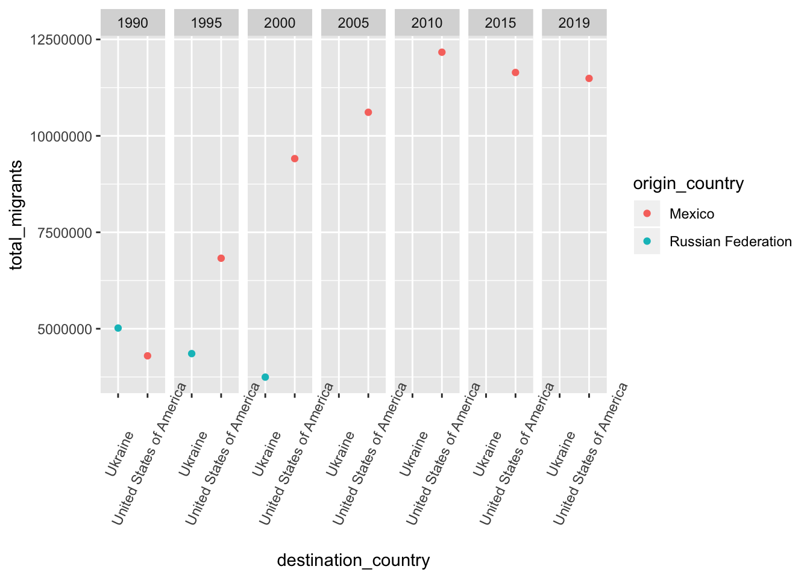

##
## Attaching package: 'dplyr'## The following objects are masked from 'package:stats':
##
## filter, lag## The following objects are masked from 'package:base':
##
## intersect, setdiff, setequal, union##
## Attaching package: 'janitor'## The following objects are masked from 'package:stats':
##
## chisq.test, fisher.testThe United Nations, Department of Economic and Social Affairs published dataset presents estimates of international migrant by age, sex and origin. Estimates are presented for 1990, 1995, 2000, 2005, 2010, 2015 and 2019 and are available for all countries and areas of the world. The estimates are based on official statistics on the foreign-born or the foreign population.
library(readxl)
UN_MigrantStockTotal_2019 <- read_excel("UN_MigrantStockTotal_2019.xlsx",
sheet = "Table 1", na = "0", skip = 15)
UN_MigrantStockTotal_2019library(readr)
UN_MigrantStock <- read_csv("UN_MigrantStockByOriginAndDestination_2019/Table 1-Table 1.csv",
skip = 16)## Warning: Missing column names filled in: 'X1' [1], 'X2' [2], 'X3' [3],
## 'X4' [4], 'X5' [5], 'X6' [6], 'X242' [242], 'X243' [243], 'X244' [244],
## 'X245' [245], 'X246' [246]## Parsed with column specification:
## cols(
## .default = col_character(),
## X1 = col_double(),
## X2 = col_double(),
## X5 = col_double(),
## X242 = col_logical(),
## X243 = col_logical(),
## X244 = col_logical(),
## X245 = col_logical(),
## X246 = col_logical()
## )## See spec(...) for full column specifications.## # A tibble: 1,991 x 246
## X1 X2 X3 X4 X5 X6 Total `Other South` `Other North`
## <dbl> <dbl> <chr> <chr> <dbl> <chr> <chr> <chr> <chr>
## 1 1990 1.99e6 WORLD <NA> 900 <NA> 153,… 6,548,526 2,366,800
## 2 1990 1.99e6 UN d… <NA> NA <NA> .. .. ..
## 3 1990 1.99e6 More… b 901 <NA> 82,7… 3,385,103 1,077,179
## 4 1990 1.99e6 Less… c 902 <NA> 70,2… 3,163,423 1,289,621
## 5 1990 1.99e6 Leas… d 941 <NA> 11,0… 482,753 239,756
## 6 1990 1.99e6 Less… <NA> 934 <NA> 59,1… 2,680,670 1,049,865
## 7 1990 1.99e6 Worl… <NA> NA <NA> .. .. ..
## 8 1990 1.99e6 High… e 1503 <NA> 77,8… 3,803,597 1,223,239
## 9 1990 1.99e6 Midd… e 1517 <NA> 65,1… 1,877,678 987,475
## 10 1990 1.99e6 Uppe… e 1502 <NA> 33,2… 957,059 376,006
## # … with 1,981 more rows, and 237 more variables: Afghanistan <chr>,
## # Albania <chr>, Algeria <chr>, `American Samoa` <chr>, Andorra <chr>,
## # Angola <chr>, Anguilla <chr>, `Antigua and Barbuda` <chr>,
## # Argentina <chr>, Armenia <chr>, Aruba <chr>, Australia <chr>,
## # Austria <chr>, Azerbaijan <chr>, Bahamas <chr>, Bahrain <chr>,
## # Bangladesh <chr>, Barbados <chr>, Belarus <chr>, Belgium <chr>,
## # Belize <chr>, Benin <chr>, Bermuda <chr>, Bhutan <chr>, `Bolivia
## # (Plurinational State of)` <chr>, `Bonaire, Sint Eustatius and
## # Saba` <chr>, `Bosnia and Herzegovina` <chr>, Botswana <chr>,
## # Brazil <chr>, `British Virgin Islands` <chr>, `Brunei
## # Darussalam` <chr>, Bulgaria <chr>, `Burkina Faso` <chr>,
## # Burundi <chr>, `Cabo Verde` <chr>, Cambodia <chr>, Cameroon <chr>,
## # Canada <chr>, `Cayman Islands` <chr>, `Central African
## # Republic` <chr>, Chad <chr>, `Channel Islands` <chr>, Chile <chr>,
## # China <chr>, `China, Hong Kong SAR` <chr>, `China, Macao SAR` <chr>,
## # Colombia <chr>, Comoros <chr>, Congo <chr>, `Cook Islands` <chr>,
## # `Costa Rica` <chr>, `Côte d'Ivoire` <chr>, Croatia <chr>, Cuba <chr>,
## # Curaçao <chr>, Cyprus <chr>, Czechia <chr>, `Dem. People's Republic of
## # Korea` <chr>, `Democratic Republic of the Congo` <chr>, Denmark <chr>,
## # Djibouti <chr>, Dominica <chr>, `Dominican Republic` <chr>,
## # Ecuador <chr>, Egypt <chr>, `El Salvador` <chr>, `Equatorial
## # Guinea` <chr>, Eritrea <chr>, Estonia <chr>, Eswatini <chr>,
## # Ethiopia <chr>, `Falkland Islands (Malvinas)` <chr>, `Faroe
## # Islands` <chr>, Fiji <chr>, Finland <chr>, France <chr>, `French
## # Guiana` <chr>, `French Polynesia` <chr>, Gabon <chr>, Gambia <chr>,
## # Georgia <chr>, Germany <chr>, Ghana <chr>, Gibraltar <chr>,
## # Greece <chr>, Greenland <chr>, Grenada <chr>, Guadeloupe <chr>,
## # Guam <chr>, Guatemala <chr>, Guinea <chr>, `Guinea-Bissau` <chr>,
## # Guyana <chr>, Haiti <chr>, `Holy See` <chr>, Honduras <chr>,
## # Hungary <chr>, Iceland <chr>, India <chr>, Indonesia <chr>, …First thing you would notice is that the first 8 rows are not countries, they are regions. This time we want to see how people are migrating from countries to countries so we can remove these rows for the regions. When you look at ‘X6’ column, it looks that those ‘region’ rows don’t have any value there.
By running the command like below to keep only the rows whose X6 column have NA
## # A tibble: 367 x 246
## X1 X2 X3 X4 X5 X6 Total `Other South` `Other North`
## <dbl> <dbl> <chr> <chr> <dbl> <chr> <chr> <chr> <chr>
## 1 1990 1.99e6 WORLD <NA> 900 <NA> 153,… 6,548,526 2,366,800
## 2 1990 1.99e6 UN d… <NA> NA <NA> .. .. ..
## 3 1990 1.99e6 More… b 901 <NA> 82,7… 3,385,103 1,077,179
## 4 1990 1.99e6 Less… c 902 <NA> 70,2… 3,163,423 1,289,621
## 5 1990 1.99e6 Leas… d 941 <NA> 11,0… 482,753 239,756
## 6 1990 1.99e6 Less… <NA> 934 <NA> 59,1… 2,680,670 1,049,865
## 7 1990 1.99e6 Worl… <NA> NA <NA> .. .. ..
## 8 1990 1.99e6 High… e 1503 <NA> 77,8… 3,803,597 1,223,239
## 9 1990 1.99e6 Midd… e 1517 <NA> 65,1… 1,877,678 987,475
## 10 1990 1.99e6 Uppe… e 1502 <NA> 33,2… 957,059 376,006
## # … with 357 more rows, and 237 more variables: Afghanistan <chr>,
## # Albania <chr>, Algeria <chr>, `American Samoa` <chr>, Andorra <chr>,
## # Angola <chr>, Anguilla <chr>, `Antigua and Barbuda` <chr>,
## # Argentina <chr>, Armenia <chr>, Aruba <chr>, Australia <chr>,
## # Austria <chr>, Azerbaijan <chr>, Bahamas <chr>, Bahrain <chr>,
## # Bangladesh <chr>, Barbados <chr>, Belarus <chr>, Belgium <chr>,
## # Belize <chr>, Benin <chr>, Bermuda <chr>, Bhutan <chr>, `Bolivia
## # (Plurinational State of)` <chr>, `Bonaire, Sint Eustatius and
## # Saba` <chr>, `Bosnia and Herzegovina` <chr>, Botswana <chr>,
## # Brazil <chr>, `British Virgin Islands` <chr>, `Brunei
## # Darussalam` <chr>, Bulgaria <chr>, `Burkina Faso` <chr>,
## # Burundi <chr>, `Cabo Verde` <chr>, Cambodia <chr>, Cameroon <chr>,
## # Canada <chr>, `Cayman Islands` <chr>, `Central African
## # Republic` <chr>, Chad <chr>, `Channel Islands` <chr>, Chile <chr>,
## # China <chr>, `China, Hong Kong SAR` <chr>, `China, Macao SAR` <chr>,
## # Colombia <chr>, Comoros <chr>, Congo <chr>, `Cook Islands` <chr>,
## # `Costa Rica` <chr>, `Côte d'Ivoire` <chr>, Croatia <chr>, Cuba <chr>,
## # Curaçao <chr>, Cyprus <chr>, Czechia <chr>, `Dem. People's Republic of
## # Korea` <chr>, `Democratic Republic of the Congo` <chr>, Denmark <chr>,
## # Djibouti <chr>, Dominica <chr>, `Dominican Republic` <chr>,
## # Ecuador <chr>, Egypt <chr>, `El Salvador` <chr>, `Equatorial
## # Guinea` <chr>, Eritrea <chr>, Estonia <chr>, Eswatini <chr>,
## # Ethiopia <chr>, `Falkland Islands (Malvinas)` <chr>, `Faroe
## # Islands` <chr>, Fiji <chr>, Finland <chr>, France <chr>, `French
## # Guiana` <chr>, `French Polynesia` <chr>, Gabon <chr>, Gambia <chr>,
## # Georgia <chr>, Germany <chr>, Ghana <chr>, Gibraltar <chr>,
## # Greece <chr>, Greenland <chr>, Grenada <chr>, Guadeloupe <chr>,
## # Guam <chr>, Guatemala <chr>, Guinea <chr>, `Guinea-Bissau` <chr>,
## # Guyana <chr>, Haiti <chr>, `Holy See` <chr>, Honduras <chr>,
## # Hungary <chr>, Iceland <chr>, India <chr>, Indonesia <chr>, …These are all regions, not countries, which means that we can safely remove these rows by adding an exclamation mark ‘!’ right before ‘is.na()’ function like below.
## # A tibble: 1,624 x 246
## X1 X2 X3 X4 X5 X6 Total `Other South` `Other North`
## <dbl> <dbl> <chr> <chr> <dbl> <chr> <chr> <chr> <chr>
## 1 1990 1.99e6 Buru… <NA> 108 B R 333,… 50,676 8,943
## 2 1990 1.99e6 Como… <NA> 174 B 14,0… 847 672
## 3 1990 1.99e6 Djib… <NA> 262 B R 122,… 5,484 1,827
## 4 1990 1.99e6 Erit… <NA> 232 I 11,8… 737 345
## 5 1990 1.99e6 Ethi… <NA> 231 B R 1,15… 22,075 7,358
## 6 1990 1.99e6 Kenya <NA> 404 B R 298,… 65,948 35,411
## 7 1990 1.99e6 Mada… <NA> 450 C 23,9… 2,851 3,563
## 8 1990 1.99e6 Mala… <NA> 454 B R 1,12… 19,158 11,744
## 9 1990 1.99e6 Maur… 1 480 C 3,613 292 75
## 10 1990 1.99e6 Mayo… <NA> 175 B 15,2… 1,354 1,142
## # … with 1,614 more rows, and 237 more variables: Afghanistan <chr>,
## # Albania <chr>, Algeria <chr>, `American Samoa` <chr>, Andorra <chr>,
## # Angola <chr>, Anguilla <chr>, `Antigua and Barbuda` <chr>,
## # Argentina <chr>, Armenia <chr>, Aruba <chr>, Australia <chr>,
## # Austria <chr>, Azerbaijan <chr>, Bahamas <chr>, Bahrain <chr>,
## # Bangladesh <chr>, Barbados <chr>, Belarus <chr>, Belgium <chr>,
## # Belize <chr>, Benin <chr>, Bermuda <chr>, Bhutan <chr>, `Bolivia
## # (Plurinational State of)` <chr>, `Bonaire, Sint Eustatius and
## # Saba` <chr>, `Bosnia and Herzegovina` <chr>, Botswana <chr>,
## # Brazil <chr>, `British Virgin Islands` <chr>, `Brunei
## # Darussalam` <chr>, Bulgaria <chr>, `Burkina Faso` <chr>,
## # Burundi <chr>, `Cabo Verde` <chr>, Cambodia <chr>, Cameroon <chr>,
## # Canada <chr>, `Cayman Islands` <chr>, `Central African
## # Republic` <chr>, Chad <chr>, `Channel Islands` <chr>, Chile <chr>,
## # China <chr>, `China, Hong Kong SAR` <chr>, `China, Macao SAR` <chr>,
## # Colombia <chr>, Comoros <chr>, Congo <chr>, `Cook Islands` <chr>,
## # `Costa Rica` <chr>, `Côte d'Ivoire` <chr>, Croatia <chr>, Cuba <chr>,
## # Curaçao <chr>, Cyprus <chr>, Czechia <chr>, `Dem. People's Republic of
## # Korea` <chr>, `Democratic Republic of the Congo` <chr>, Denmark <chr>,
## # Djibouti <chr>, Dominica <chr>, `Dominican Republic` <chr>,
## # Ecuador <chr>, Egypt <chr>, `El Salvador` <chr>, `Equatorial
## # Guinea` <chr>, Eritrea <chr>, Estonia <chr>, Eswatini <chr>,
## # Ethiopia <chr>, `Falkland Islands (Malvinas)` <chr>, `Faroe
## # Islands` <chr>, Fiji <chr>, Finland <chr>, France <chr>, `French
## # Guiana` <chr>, `French Polynesia` <chr>, Gabon <chr>, Gambia <chr>,
## # Georgia <chr>, Germany <chr>, Ghana <chr>, Gibraltar <chr>,
## # Greece <chr>, Greenland <chr>, Grenada <chr>, Guadeloupe <chr>,
## # Guam <chr>, Guatemala <chr>, Guinea <chr>, `Guinea-Bissau` <chr>,
## # Guyana <chr>, Haiti <chr>, `Holy See` <chr>, Honduras <chr>,
## # Hungary <chr>, Iceland <chr>, India <chr>, Indonesia <chr>, …Now we got a dataframe of 1,624 rows with 246 columns as return with all countries only data for each year.
When you look at the columns we would notice that there are unnecessary columns like ‘Total’, ‘Other South’, etc, because we are interested in estimates of the migrants only for countries to countries. We can remove those unnecessary columns with ‘select’ command along with other unnecessary columns like below.
UN_Countries_df <- UN_Countries %>%
select(-X2, -X4, -X6, -Total, -starts_with("Other"))
UN_Countries_df## # A tibble: 1,624 x 240
## X1 X3 X5 Afghanistan Albania Algeria `American Samoa` Andorra
## <dbl> <chr> <dbl> <chr> <chr> <chr> <chr> <chr>
## 1 1990 Buru… 108 <NA> <NA> <NA> <NA> <NA>
## 2 1990 Como… 174 <NA> <NA> <NA> <NA> <NA>
## 3 1990 Djib… 262 <NA> <NA> <NA> <NA> <NA>
## 4 1990 Erit… 232 <NA> <NA> <NA> <NA> <NA>
## 5 1990 Ethi… 231 <NA> <NA> <NA> <NA> <NA>
## 6 1990 Kenya 404 <NA> <NA> <NA> <NA> <NA>
## 7 1990 Mada… 450 <NA> <NA> <NA> <NA> <NA>
## 8 1990 Mala… 454 <NA> <NA> <NA> <NA> <NA>
## 9 1990 Maur… 480 <NA> <NA> <NA> <NA> <NA>
## 10 1990 Mayo… 175 <NA> <NA> <NA> <NA> <NA>
## # … with 1,614 more rows, and 232 more variables: Angola <chr>,
## # Anguilla <chr>, `Antigua and Barbuda` <chr>, Argentina <chr>,
## # Armenia <chr>, Aruba <chr>, Australia <chr>, Austria <chr>,
## # Azerbaijan <chr>, Bahamas <chr>, Bahrain <chr>, Bangladesh <chr>,
## # Barbados <chr>, Belarus <chr>, Belgium <chr>, Belize <chr>,
## # Benin <chr>, Bermuda <chr>, Bhutan <chr>, `Bolivia (Plurinational
## # State of)` <chr>, `Bonaire, Sint Eustatius and Saba` <chr>, `Bosnia
## # and Herzegovina` <chr>, Botswana <chr>, Brazil <chr>, `British Virgin
## # Islands` <chr>, `Brunei Darussalam` <chr>, Bulgaria <chr>, `Burkina
## # Faso` <chr>, Burundi <chr>, `Cabo Verde` <chr>, Cambodia <chr>,
## # Cameroon <chr>, Canada <chr>, `Cayman Islands` <chr>, `Central African
## # Republic` <chr>, Chad <chr>, `Channel Islands` <chr>, Chile <chr>,
## # China <chr>, `China, Hong Kong SAR` <chr>, `China, Macao SAR` <chr>,
## # Colombia <chr>, Comoros <chr>, Congo <chr>, `Cook Islands` <chr>,
## # `Costa Rica` <chr>, `Côte d'Ivoire` <chr>, Croatia <chr>, Cuba <chr>,
## # Curaçao <chr>, Cyprus <chr>, Czechia <chr>, `Dem. People's Republic of
## # Korea` <chr>, `Democratic Republic of the Congo` <chr>, Denmark <chr>,
## # Djibouti <chr>, Dominica <chr>, `Dominican Republic` <chr>,
## # Ecuador <chr>, Egypt <chr>, `El Salvador` <chr>, `Equatorial
## # Guinea` <chr>, Eritrea <chr>, Estonia <chr>, Eswatini <chr>,
## # Ethiopia <chr>, `Falkland Islands (Malvinas)` <chr>, `Faroe
## # Islands` <chr>, Fiji <chr>, Finland <chr>, France <chr>, `French
## # Guiana` <chr>, `French Polynesia` <chr>, Gabon <chr>, Gambia <chr>,
## # Georgia <chr>, Germany <chr>, Ghana <chr>, Gibraltar <chr>,
## # Greece <chr>, Greenland <chr>, Grenada <chr>, Guadeloupe <chr>,
## # Guam <chr>, Guatemala <chr>, Guinea <chr>, `Guinea-Bissau` <chr>,
## # Guyana <chr>, Haiti <chr>, `Holy See` <chr>, Honduras <chr>,
## # Hungary <chr>, Iceland <chr>, India <chr>, Indonesia <chr>, `Iran
## # (Islamic Republic of)` <chr>, Iraq <chr>, Ireland <chr>, `Isle of
## # Man` <chr>, Israel <chr>, …I’m using minus ‘-’ to delete columns and using ‘start_with’ function inside ‘select’ command to delete multiple columns whose names matche the text pattern of “Other”.
UN_Countries_rename <- UN_Countries_df %>%
rename(
year = X1,
destination_country = X3,
country_code = X5
)
UN_Countries_rename## # A tibble: 1,624 x 240
## year destination_cou… country_code Afghanistan Albania Algeria
## <dbl> <chr> <dbl> <chr> <chr> <chr>
## 1 1990 Burundi 108 <NA> <NA> <NA>
## 2 1990 Comoros 174 <NA> <NA> <NA>
## 3 1990 Djibouti 262 <NA> <NA> <NA>
## 4 1990 Eritrea 232 <NA> <NA> <NA>
## 5 1990 Ethiopia 231 <NA> <NA> <NA>
## 6 1990 Kenya 404 <NA> <NA> <NA>
## 7 1990 Madagascar 450 <NA> <NA> <NA>
## 8 1990 Malawi 454 <NA> <NA> <NA>
## 9 1990 Mauritius 480 <NA> <NA> <NA>
## 10 1990 Mayotte 175 <NA> <NA> <NA>
## # … with 1,614 more rows, and 234 more variables: `American Samoa` <chr>,
## # Andorra <chr>, Angola <chr>, Anguilla <chr>, `Antigua and
## # Barbuda` <chr>, Argentina <chr>, Armenia <chr>, Aruba <chr>,
## # Australia <chr>, Austria <chr>, Azerbaijan <chr>, Bahamas <chr>,
## # Bahrain <chr>, Bangladesh <chr>, Barbados <chr>, Belarus <chr>,
## # Belgium <chr>, Belize <chr>, Benin <chr>, Bermuda <chr>, Bhutan <chr>,
## # `Bolivia (Plurinational State of)` <chr>, `Bonaire, Sint Eustatius and
## # Saba` <chr>, `Bosnia and Herzegovina` <chr>, Botswana <chr>,
## # Brazil <chr>, `British Virgin Islands` <chr>, `Brunei
## # Darussalam` <chr>, Bulgaria <chr>, `Burkina Faso` <chr>,
## # Burundi <chr>, `Cabo Verde` <chr>, Cambodia <chr>, Cameroon <chr>,
## # Canada <chr>, `Cayman Islands` <chr>, `Central African
## # Republic` <chr>, Chad <chr>, `Channel Islands` <chr>, Chile <chr>,
## # China <chr>, `China, Hong Kong SAR` <chr>, `China, Macao SAR` <chr>,
## # Colombia <chr>, Comoros <chr>, Congo <chr>, `Cook Islands` <chr>,
## # `Costa Rica` <chr>, `Côte d'Ivoire` <chr>, Croatia <chr>, Cuba <chr>,
## # Curaçao <chr>, Cyprus <chr>, Czechia <chr>, `Dem. People's Republic of
## # Korea` <chr>, `Democratic Republic of the Congo` <chr>, Denmark <chr>,
## # Djibouti <chr>, Dominica <chr>, `Dominican Republic` <chr>,
## # Ecuador <chr>, Egypt <chr>, `El Salvador` <chr>, `Equatorial
## # Guinea` <chr>, Eritrea <chr>, Estonia <chr>, Eswatini <chr>,
## # Ethiopia <chr>, `Falkland Islands (Malvinas)` <chr>, `Faroe
## # Islands` <chr>, Fiji <chr>, Finland <chr>, France <chr>, `French
## # Guiana` <chr>, `French Polynesia` <chr>, Gabon <chr>, Gambia <chr>,
## # Georgia <chr>, Germany <chr>, Ghana <chr>, Gibraltar <chr>,
## # Greece <chr>, Greenland <chr>, Grenada <chr>, Guadeloupe <chr>,
## # Guam <chr>, Guatemala <chr>, Guinea <chr>, `Guinea-Bissau` <chr>,
## # Guyana <chr>, Haiti <chr>, `Holy See` <chr>, Honduras <chr>,
## # Hungary <chr>, Iceland <chr>, India <chr>, Indonesia <chr>, `Iran
## # (Islamic Republic of)` <chr>, Iraq <chr>, Ireland <chr>, …Now, it’s ready to tidy this ‘matrix’-ish data form by using ‘gather’ command from tidyr package.
library(tidyr)
Countries_by_no <- gather(UN_Countries_rename, "origin_country", "migrants", 4:235, na.rm = TRUE)
Countries_by_no## # A tibble: 78,754 x 10
## year destination_cou… country_code X242 X243 X244 X245 X246
## <dbl> <chr> <dbl> <lgl> <lgl> <lgl> <lgl> <lgl>
## 1 1990 Namibia 516 NA NA NA NA NA
## 2 1990 South Africa 710 NA NA NA NA NA
## 3 1990 Egypt 818 NA NA NA NA NA
## 4 1990 Libya 434 NA NA NA NA NA
## 5 1990 Azerbaijan 31 NA NA NA NA NA
## 6 1990 Bahrain 48 NA NA NA NA NA
## 7 1990 Cyprus 196 NA NA NA NA NA
## 8 1990 Iraq 368 NA NA NA NA NA
## 9 1990 Israel 376 NA NA NA NA NA
## 10 1990 Jordan 400 NA NA NA NA NA
## # … with 78,744 more rows, and 2 more variables: origin_country <chr>,
## # migrants <chr>## # A tibble: 78,754 x 5
## year destination_country country_code origin_country migrants
## <dbl> <chr> <dbl> <chr> <chr>
## 1 1990 Namibia 516 Afghanistan 64
## 2 1990 South Africa 710 Afghanistan 59
## 3 1990 Egypt 818 Afghanistan 237
## 4 1990 Libya 434 Afghanistan 677
## 5 1990 Azerbaijan 31 Afghanistan 254
## 6 1990 Bahrain 48 Afghanistan 215
## 7 1990 Cyprus 196 Afghanistan 2
## 8 1990 Iraq 368 Afghanistan 241
## 9 1990 Israel 376 Afghanistan 2,724
## 10 1990 Jordan 400 Afghanistan 74
## # … with 78,744 more rowsHere we want to know which countries has the highest number of migrant by year . To do so, I would use
# group by year
# change the migrants variable into num type
clean_country_df$migrants <- as.integer(clean_country_df$migrants)## Warning: NAs introduced by coercion## Classes 'tbl_df', 'tbl' and 'data.frame': 78754 obs. of 5 variables:
## $ year : num 1990 1990 1990 1990 1990 1990 1990 1990 1990 1990 ...
## $ destination_country: chr "Namibia" "South Africa" "Egypt" "Libya" ...
## $ country_code : num 516 710 818 434 31 48 196 368 376 400 ...
## $ origin_country : chr "Afghanistan" "Afghanistan" "Afghanistan" "Afghanistan" ...
## $ migrants : num 64 59 237 677 254 215 2 241 0 74 ...#View(clean_country_df)
by_dest_Country_df <- clean_country_df %>%
group_by(year, destination_country, origin_country) %>%
summarise(total_migrants = sum(migrants)) %>%
arrange(desc(total_migrants))
by_dest_Country_df## # A tibble: 78,754 x 4
## # Groups: year, destination_country [1,613]
## year destination_country origin_country total_migrants
## <dbl> <chr> <chr> <dbl>
## 1 2010 United States of America Mexico 12168662
## 2 2015 United States of America Mexico 11643298
## 3 2019 United States of America Mexico 11489684
## 4 2005 United States of America Mexico 10611064
## 5 2000 United States of America Mexico 9410529
## 6 1995 United States of America Mexico 6827945
## 7 1990 Ukraine Russian Federation 5018098
## 8 1995 Ukraine Russian Federation 4355392
## 9 1990 United States of America Mexico 4298014
## 10 2000 Ukraine Russian Federation 3745842
## # … with 78,744 more rowsAs we can see here, we got more than 78,700 colums. I would prefer to take a subset of the data based on some statistical analysis. To do so, we can get mean, median to set a filtering cretria. Additionally, I will add a ranking column to the dataframe to rank the countries
## Min. 1st Qu. Median Mean 3rd Qu. Max.
## 0 19 153 13361 1162 12168662# take a subset by filtering the results to only pick total migrants > mean
sub_set_migrant <- select(filter(by_dest_Country_df, total_migrants > 13361), c(1:4))
sub_set_migrant[, 4][is.na(sub_set_migrant[, 4])] <- 0
# add ranking system desc. ordered
sub_set_migrant$Rank <- order(sub_set_migrant$total_migrants, decreasing = TRUE)
sub_set_migrant## # A tibble: 7,020 x 5
## # Groups: year, destination_country [1,062]
## year destination_country origin_country total_migrants Rank
## <dbl> <chr> <chr> <dbl> <int>
## 1 2010 United States of America Mexico 12168662 1
## 2 2015 United States of America Mexico 11643298 2
## 3 2019 United States of America Mexico 11489684 3
## 4 2005 United States of America Mexico 10611064 4
## 5 2000 United States of America Mexico 9410529 5
## 6 1995 United States of America Mexico 6827945 6
## 7 1990 Ukraine Russian Federation 5018098 7
## 8 1995 Ukraine Russian Federation 4355392 8
## 9 1990 United States of America Mexico 4298014 9
## 10 2000 Ukraine Russian Federation 3745842 10
## # … with 7,010 more rowsNow we get a much tider data about 7,000 columns, only 4 columns. However, we can use spread() function to group by year. to see
gather_by_year <- sub_set_migrant %>%
spread(key = "year", value = "total_migrants")%>%
arrange(Rank)
# replace NA with 0 value
gather_by_year[, 4:10][is.na(gather_by_year[, 4:10])] <- 0
gather_by_year## # A tibble: 7,020 x 10
## # Groups: destination_country [168]
## destination_cou… origin_country Rank `1990` `1995` `2000` `2005` `2010`
## <chr> <chr> <int> <dbl> <dbl> <dbl> <dbl> <dbl>
## 1 United States o… Mexico 1 0. 0. 0. 0. 1.22e7
## 2 United States o… Mexico 2 0. 0. 0. 0. 0.
## 3 United States o… Mexico 3 0. 0. 0. 0. 0.
## 4 United States o… Mexico 4 0. 0. 0. 1.06e7 0.
## 5 United States o… Mexico 5 0. 0. 9.41e6 0. 0.
## 6 United States o… Mexico 6 0. 6.83e6 0. 0. 0.
## 7 Ukraine Russian Feder… 7 5.02e6 0. 0. 0. 0.
## 8 Ukraine Russian Feder… 8 0. 4.36e6 0. 0. 0.
## 9 United States o… Mexico 9 4.30e6 0. 0. 0. 0.
## 10 Ukraine Russian Feder… 10 0. 0. 3.75e6 0. 0.
## # … with 7,010 more rows, and 2 more variables: `2015` <dbl>, `2019` <dbl>I would prefer to explore the data quickly using the Heatmap chart. This can be done by assigning ‘destination_country’ to X-axis, ‘origin_country’ to Y-axis, and ‘migrants’ to Color.
Note This group is for countries that have total number of migrants above average ~ 1300 migrant per year. First step, we can plot a boxplot to explore the data
library(ggplot2)
data_1 <- sub_set_migrant %>%
filter(Rank <= 10 & total_migrants >= mean(sub_set_migrant$total_migrants)) %>%
select(destination_country, origin_country, total_migrants, year)
data_1## # A tibble: 10 x 4
## # Groups: year, destination_country [10]
## destination_country origin_country total_migrants year
## <chr> <chr> <dbl> <dbl>
## 1 United States of America Mexico 12168662 2010
## 2 United States of America Mexico 11643298 2015
## 3 United States of America Mexico 11489684 2019
## 4 United States of America Mexico 10611064 2005
## 5 United States of America Mexico 9410529 2000
## 6 United States of America Mexico 6827945 1995
## 7 Ukraine Russian Federation 5018098 1990
## 8 Ukraine Russian Federation 4355392 1995
## 9 United States of America Mexico 4298014 1990
## 10 Ukraine Russian Federation 3745842 2000ggplot(data_1, aes(x = destination_country , y = total_migrants, fill = origin_country , colour = origin_country)) +
geom_point() +
facet_grid(~ data_1$year) +
labs(y = "total_migrants") +
scale_y_continuous() +
theme(axis.text.x = element_text(angle=65, vjust=0.65))
## Creating a generic function for 'toJSON' from package 'jsonlite' in package 'googleVis'##
## Welcome to googleVis version 0.6.4
##
## Please read Google's Terms of Use
## before you start using the package:
## https://developers.google.com/terms/
##
## Note, the plot method of googleVis will by default use
## the standard browser to display its output.
##
## See the googleVis package vignettes for more details,
## or visit https://github.com/mages/googleVis.
##
## To suppress this message use:
## suppressPackageStartupMessages(library(googleVis))## starting httpd help server ... doneggplot(data = gather_by_year) + geom_sf(aes(fill = gather_by_year$total_migrants)) + scale_fill_viridis_c(option = “plasma”, trans = “sqrt”) ```
As we can see from the plot, for the top 50 destination countries that have most of the migrants populations